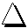
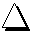
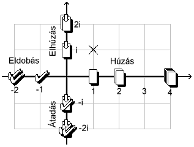

|
|
Ég és Föld
Az átlátszó szín neve az online változatban ÉgSzín lett, s e mellett
létrejött a FöldSzín is. Ez a  színbeli
megfelelõje: az ilyen kártyák a jelzéslap színét veszik fel lerakásukkor. Ha a jelzéslap is föld színû, akkor lilává válnak. színbeli
megfelelõje: az ilyen kártyák a jelzéslap színét veszik fel lerakásukkor. Ha a jelzéslap is föld színû, akkor lilává válnak.
Turistajelzés-rendszerek
Minden olyan pakli, melyben turistajelzéses lapok is vannak, az alábbi három
turistajelzés-rendszer valamelyike szerint készült: magyarországi (MTSZ), szlovákiai (KST), romániai.
Turistajelzések (HU)
Színek: kék, piros, sárga, zöld
Jelzések:  (sáv), (sáv),  (kereszt), (kereszt),  (kör), (kör),  (háromszög), (háromszög),  (négyzet), (négyzet),  (barlang), (barlang),  (rom), (rom),  (körút). (körút).
Színkérõ jelzés:  , turistajelzés-kérõ jelzés: , turistajelzés-kérõ jelzés: 
Turistické znaèky (SK)
Színek: piros / èervená, kék / modrá, zöld / zelená, sárga / žltá
Jelzések: (sávjelzés / pásová znaèka),  (helyi jelzés / miestná znaèka), (helyi jelzés / miestná znaèka),  (tanösvény / náuèný chodník, NCH - csak zöld), (körjelzés / okružná znaèka), (háromszög / trojuholník), (rom / zrúcanina), (tanösvény / náuèný chodník, NCH - csak zöld), (körjelzés / okružná znaèka), (háromszög / trojuholník), (rom / zrúcanina),  (forrás / prameò), (ház / chata), (forrás / prameò), (ház / chata),  (barlang / jaskyòa), (barlang / jaskyòa),  (Fontosabb kitérõ / Významová znaèka). (Fontosabb kitérõ / Významová znaèka).
Színkérõ jelzés: , turistajelzés-kérõ jelzés: 
Marcaje turistice (RO)
Színek: piros / roºu, sárga / galben, kék / albastru
Jelzések:  (sáv / banda), (sáv / banda),  (kereszt / cruce),  (háromszög / triunghi), (kereszt / cruce),  (háromszög / triunghi),  (pont / punct). (pont / punct).
Színkérõ jelzés:  , turistajelzés-kérõ jelzés: , turistajelzés-kérõ jelzés: 
Combo
 : COMBO-lerakás : COMBO-lerakás
Ha valakinek több különbözõ turistajelzése van (a szín nem számít), köztük is,
akkor egy ilyen jelzésû lap segítségével nem csak megszabadulhat tõlük, hanem számos elõnyben is részesül.
A COMBO lerakása úgy történik, hogy a -t követõen
kötelezõen egy -val kell kezdeni, majd a maradék hétfajta
(magyar) turistajelzésbõl (, , , , , , ) lehet tenni egyet-egyet (a sorrend nem számít). Attól függõen, hogy hány különbözõ jelzés
szerepel, a COMBO lehet 1. szintû (-val együtt max. 4 féle), 2. szintû (legalább 5 féle) vagy 3. szintû (mind a 8 féle).
Mint minden extra sorozás esetén, lilát nem lehet belerakni a COMBO-ba.
A kártyalap extrasorozó jellegû, azaz lerakása után közvetlenül rá lehet rakni egy COMBO-t, de ha a
kártyát lerakó játékos nem tesz rá semmit, a COMBO-lehetõség a következõ játékosra száll. Ez mindaddig így megy,
amíg a -kártya az aktuális (azaz nem raknak rá semmit). A következõ játékos természetesen nem kell hogy éljen
ezzel a lehetõséggel, egy más, színben v. jelzésben illeszkedõ lapot is tehet a -lapra.
Az egyik 'jutalom' a COMBO-t lerakó játékosnak az, hogy minden COMBO-beli turistajelzéses lap helyébe kap egy ÉgSzín  -et vagy -et vagy
 -et (utóbbival a játékos egy tetszõleges kártyáját eldobhatja a pakli tetejére); a kettõ közül véletlenszerûen. -et (utóbbival a játékos egy tetszõleges kártyáját eldobhatja a pakli tetejére); a kettõ közül véletlenszerûen.
A másik pedig az, hogy a COMBO szintjétõl függõen az összes megmaradt kártyája színe átváltozik:
1.szint esetén FöldSzínûre, 2.szint esetén Tarkára (színkérõ), 3.szint esetén CsúcsCsokira (bõvített jelzéskérõ). A két utóbbi speciális színrõl
még csak annyit, hogy kötelezõ húzás továbbpasszolására is használható!
Komplex kimaradás és kötelezõ húzás
Utasító jelzések
 : Ix (kimaradó) : Ix (kimaradó)
Csak kimaradás.
 : Húzó, : Húzó,  : KettesHúzó, : KettesHúzó,  : NégyesHúzó : NégyesHúzó
A pakliból egyet, kettõt illetve négyet kell húzni.
: Elhúzó,  : KettesElhúzó : KettesElhúzó
Az elõzõ játékostól egyet illetve kettõt kell elhúzni.
 : Pipa (eldobó), : Pipa (eldobó),  : KettesPipa : KettesPipa
Az elõzõ játékos egy illetve két, általa választott lapját eldobja a pakli tetejére.
 : Átadó, : Átadó,  : KettesÁtadó : KettesÁtadó
Az elõzõ játékos egy illetve két, általa választott lapját átadja (olyan mint az elhúzás, csak a játékos választja ki,
mely lapokat kapja meg a szomszédja).
Halmozás
A fenti négy húzási mód párba állítható: a (pakliból) húzás az eldobás (pipa) ellentéte,
az elhúzás az átadásé. A halmozás végén mindkét párnak legfeljebb csak az egyik
módját kell végrehajtani, mert a párok tagjai egymást kizárják. Hogy melyiket,
az attól függ, hogy az adott párt tekintve melyikbõl van több, s annyi lappal kell végezni, amennyi a
kettõ különbsége.
Ha pl. a halmazat a következõ: egy ,
egy , egy
és három
, akkor az eldobandó
lapok száma 1 lenne, a pakliból húzandóké 2, továbbá az elõzõ játékos által átadandóké
ugyancsak 2 és az elõzõ játékostól való elhúzandóké 3. A pakliból húzandókból több van (2) mint
az eldobandókból (1), így a pakliból kell húzni, mégpedig a kettõ különbségét: 2 - 1 = 1 lapot.
Ugyanígy, az elhúzandó lapokból van több (3) mint az átadandókból (2), így az elõzõ játékostól
3 - 2 = 1 lapot kell elhúzni (azaz az elõzõ játékos nem határozhatja meg, mely lapot adja át). A halmozás végén tehát egy lapot kell húzni
a pakliból és egyet az elõzõ játékostól (az utolsó halmozótól).
A fentiek úgy tekintendõk, mintha csak a pakliból húzandó mennyiséget és az elõzõ játékostól való elhúzási mennyiséget
számolnánk a halmozáskor, és az eldobási valamint az átadási lapszámot negatív elõjellel vennénk figyelembe
hozzájuk képest. Ha a halmozás végén a húzási mennyiség negatív, akkor abszolút értékben annyit kell az elõzõ játékosnak eldobnia (ha
pozitív, akkor annyit kell húznia a kimaradó játékosnak); a negatív elhúzás pedig ugyanígy, átadást jelent.
Egy számpárral számolható tehát a halmozás mindenkori állása és végeredménye. Ezt a számpárt egy komplex egész számnak tekintjük,
ahol a valós rész a pakliból húzandó lapok számát, a képzetes (imaginárius) rész pedig az elhúzandó lapok számát jelenti.
Egy táblázatba foglalhatók így az utasító jelzések. A jelzésnek megfelelõ lapmennyiséget kell megszorozni az utasítás típusához tartozó egységgel (húzás: 1, eldobás: -1, elhúzás: i, átadás: -i),
s így kapjuk meg a lap halmazati 'utasító' értékét ([Ut.]), amit hozzá kell adni az addigiakhoz a lap lerakásakor. A sorok a típusokat, az oszlopok a mennyiségeket jelentik:
| 1 | 2 | 4 |
| Húzás [1] |
[Ut.: 1 * 1 = 1] |
[Ut.: 2 * 1 = 2] |
[Ut.: 4 * 1 = 4] |
| Elhúzás [i] |
[Ut.: 1 * i = i] |
[Ut.: 2 * i = 2i] | |
| Eldobás [-1] |
[Ut.: 1 * (-1) = -1] |
[Ut.: 2 * (-1) = -2] | |
| Átadás [-i] |
[Ut.: 1 * (-i) = -i] |
[Ut.: 2 * (-i) = -2i] | |
Az a táblázatban nem szerepel, mert az nem befolyásolja a halmazatot [Ut.: 0].
A jelzésben a nyíl mutatja azt, hogy az utasítás típusa imaginárius [i], a pipálás pedig azt, hogy ellentétes [negatív elõjel].
[Az i a -1 négyzetgyöke, azaz i * i = (-i) * (-i) = -1. Az összeadás úgy történik, hogy a valós részt a valós résszel, a képzetes részt pedig, azaz az i-s tagot a képzetes résszel
adjuk össze egyszerre].
Ugyanez egy koordináta-rendszerrel is ábrázolható. Középen van a 0, az egyszerû kimaradás. A vízszintes, valós résznek megfelelõ tengely
pozitív irányába (jobbra) nõ a pakliból húzás mennyisége, negatív irányban (jobbra) pedig az elõzõ játékos által eldobandó lapok száma.
Hasonlóan a függõleges, képzetes tengely mentén pozitív irányban (felfelé) nõ az elõzõ játékostól elhúzandó lapszám, negatív irányban (lefelé)
az õáltala átadandó lapok száma.

Minden egyes halmazat egy rácspontnak felel meg a koordinátarendszerben. Halmozás kezdetekor
az utasítási szám (halmazat) onnan indul, ahová a lerakott lap jelzése be van jelölve, s késõbb
ehhez képest kell nézni a további halmozást (hozzáadni a következõ lap utasítási számát).
A korábbi példa
(egy ,
egy , egy
és három
) komplex mennyiségét a táblázat
alapján összeszámolva a végösszeg: -1 + 2 - 2i + 3 * i = 1 + i. Ez a koordináta-rendszer x-szel megjelölt (1,1) pontjának
felel meg, s leolvasható arról is, hogy 1 lapot kell húzni a pakliból és 1 lapot elhúzni az elõzõ játékostól.
Utasításszorzó jelzések
Nem utasító jelzések, de halmozásra használhatók. Halmozáson kívül (ha nincs kimaradás / kötelezõ húzás
érvényben), nincs semmi hatásuk; halmozáskor azonban az addigi halmazatot megváltoztatják.
Ilyen lapok sorozásakor össze kell szorozni a szorzókat.
 : Duplázás : Duplázás
Ilyen jelzésû lap lerakása halmozáskor az eddigi kötelezõ húzási mennyiséget
megduplázza, azaz kettõvel megszorozza, s a következõ játékosra hárítja.
Ez gyakorlatilag azt jelenti, hogy a halmazat mindkét komponense (húzás/eldobás, elhúzás/átadás) a
duplájába megy át:

Sorozáskor annyiszor kell duplázni, ahány -lap
lett lerakva (2 * 2 = 4, így pl. 2 esetén négyszerezni kell).
 : Pipálás (negálás, Pi-forgatás) : Pipálás (negálás, Pi-forgatás)
Ilyen jelzésû lap lerakása halmozáskor az eddigi kötelezõ húzási mennyiséget
negálja, azaz (-1)-gyel megszorozza, s a következõ játékosra hárítja.
Ez gyakorlatilag azt jelenti, hogy a halmazat mindkét komponense ellentétébe megy át (az addigi pakliból való húzási mennyiség az elõzõ játékos általi eldobásba és az eldobás húzásba; továbbá
az addigi elhúzási mennyiség átadásba és fordítva):

Sorozáskor annyiszor kell 'pipálni', ahány -lap
lett lerakva ((-1) * (-1) = 1, így páros számú esetén nem változik a halmazat, mert visszaáll az eredeti; páratlan
esetben pedig az ellentettet kell venni).
 : Félpipálás (forgatás, fél Pi-forgatás) : Félpipálás (forgatás, fél Pi-forgatás)
Ilyen jelzésû lap lerakása halmozáskor az eddigi kötelezõ húzási mennyiség
i-szeresét képezi, s a következõ játékosra hárítja.
Ez gyakorlatilag azt jelenti, hogy a halmazat egyes módjaihoz tartozó számok a módok között eggyel léptetõdnek (körkörösen egymásba mennek át:
a pakliból való húzási mennyiség elhúzásba, az elhúzási mennyiség eldobásba, az eldobás átadásba és az átadás vissza pakliból való húzásba):

Sorozáskor annyiszor kell 'félpipálni', ahány -lap
lett lerakva (i * i = -1, így két egy -nak felel meg. Emiatt
négy nem változtatja a halmazatot).
 : Utasítójelzés-kérés : Utasítójelzés-kérés
A játékos az ilyen lap lerakásakor a
kilenc utasító jelzés (, , , ,
, , , , , )
és a  közül
kér egyet. A következõ játékos ilyenkor a kértnek megfelelõ jelzésû
lapot kell tegyen, bármilyen színût. A jelzéskérés addig érvényben van,
amíg a -lapra nem raktak
semmit. közül
kér egyet. A következõ játékos ilyenkor a kértnek megfelelõ jelzésû
lapot kell tegyen, bármilyen színût. A jelzéskérés addig érvényben van,
amíg a -lapra nem raktak
semmit.
Az egyébként bármilyen színre illeszkedõ lila
lapokat nem lehet -re tenni,
(csak akkor ha a kért jelzésû) mivel itt csak jelzésbeli illeszkedés számít, színbeli nem.
A jelzéskérés hatástalanítható azonos színû ásszal ( ), felülbírálható
színben vagy jelzésben illeszkedõ bármilyen jelzéskérõvel (, jelzésû vagy CsúcsCsoki színû lappal).
Ez utóbbi esetben új jelzés kérhetõ. ), felülbírálható
színben vagy jelzésben illeszkedõ bármilyen jelzéskérõvel (, jelzésû vagy CsúcsCsoki színû lappal).
Ez utóbbi esetben új jelzés kérhetõ.
Az ilyen jelzésû lapok halmozásra is használhatók, a következõ játékos csak akkor
halmozhat tovább, ha a kérést teljesíti vele, vagy felülbírálja (ez esetben színben illeszkedõ -vel nem lehet,
mert az nem használható halmozásra).
Szín-jelzés kombinációk, lerakhatóság
Random (_R) paklik
Azoknál a pakliknál, melyek neve _R-re végzõdik, a kártyalapok száma helyén * áll.
Ez azt jelenti, hogy ezek a 'paklik' - a számítógépes lehetõségeket kihasználva - elõre rögzített
kártyalap-összeállítással nem rendelkeznek, hanem egy új kártyalap húzásakor a
kártyalap színe és jelzése egymástól függetlenül, véletlenszerûen 'kisorsolódik'.
Olyan ez, mintha kártyacsomag helyett két rulett- vagy szerencsekerék lenne, s
húzáskor mindkettõt megpörgetnék, a húzott kártya színének és jelzésének végül azt
tekintenék, ahol megállnak. Így ezekben a paklikban minden lehetséges szín-jelzés
kombináció elõfordulhat. Szükséges tehát minden kombináció jelentését meghatározni
(egyébként a többi pakliban is elõfordulhatnak a klasszikus változathoz képest
szokatlan kombinációk). Ezen kívül a fent tárgyalt új színek és jelzések is
megkövetelnek bizonyos új szabályok bevezetését.
A bõvített szabályok a klasszikus játékszabályok logikáját követve lettek meghatározva:
Szokatlan, de egyértelmû kombinációk
Kétszínû lehet bármi, nem csak , mint
ahogyan a klasszikus változatban volt. Egy kétszínû -ra
pl. vegyesen lehet a két szín lapjait színsorozni.
Fekete is lehet bármi, nem csak . A fekete kártyák
színes lapoknak számítanak, de ilyen színt változatlanul nem lehet kérni. Ha egy kártya jelzése sorozható vagy beszúrható (pl. turistajelzés),
akkor maga a kártya is, még akkor is ha fekete.
Lila lapok: extrasorozás, vétózás
Lila is lehet bármilyen jelzésû. A turistajelzéses, az extrasorozó és a kérõlapok többször is vétózhatók
(nem hatástalanítódnak, hanem a legutoljára vétózó játékos számára érvényesülnek),
míg a többi kártya csak egyszer. A halmozás közbeni vétózás (legyen az bámilyen lap: utasító vagy csak olyan amivel
halmozni is lehet) a teljes halmazatot hatástalanítja.
Ha egy extrasorozó lap (,  vagy ) lila, az
azt jelenti, hogy a lapot lerakó játékos már nem sorozhat rá, mert ha valaki lilát tesz, abban a körben
csak azt az egy lapot rakhatja le, mást már nem. Így a színkérés után a következõ játékosé az extrasorozás lehetõsége. vagy ) lila, az
azt jelenti, hogy a lapot lerakó játékos már nem sorozhat rá, mert ha valaki lilát tesz, abban a körben
csak azt az egy lapot rakhatja le, mást már nem. Így a színkérés után a következõ játékosé az extrasorozás lehetõsége.
Figyelni kell arra is, hogy ha õ égszínûvel kezdené az extrasorozást, az a lilához hasonulna, így õ is csak azt az egy lapot tehetné le.
Szín- és jelzéskérés
Szín- és jelzéskérõ tulajdonságú lehet szín is és jelzés is (a lila és a tarka színkérõ színek,
a színkérõ jelzés; a
CsúcsCsoki jelzéskérõ szín, a és az jelzéskérõ jelzések).
Egy kérõlap esetén a kérésre illeszkedéshez minden kérésnek meg kell felelni.
Így pl. bármilyen lila jelzéskérõ esetén színt és jelzést is kérni kell, s e kettõ egyszerre érvényes, azaz csak
olyan kártya felel meg a kérésnek, ami a kért színnel és a kért jelzéssel rendelkezik.
A következõkben a jelzéskérés felülbírálásáról lesz szó, de hasonlóan mûködik a színkérés felülbírálása is.
Jelzéskérés felülbírálásához egy színben vagy jelben illeszkedõ jelzéskérõ szükséges.
Egy tetszõleges jelzéskérõ jelzésû kártyára illeszkedik egy jelzéskérõ színû kártya is, de fordítva nem igaz (színkérésre vonatkozóan
ez azt jelentené, hogy egy lila lap színkérése felülbírálható lenne egy bármilyen színû színkérõ jelzésû lappal).
Így pl. egy piros felülbírálható kék -vel vagy piros -vel,
de akár egy bármilyen jelzésû CsúcsCsoki kártyával.
Kérés hatástalanítható színben illeszkedõ -szal vagy jelzésben
megegyezõ bármilyen színû kártyával. Ez utóbbira példa: egy bármilyen jelzésû lila kártyára
illeszkedik egy vele azonos jelzésû kártya, a kért színtõl függetlenül. Ha tehát a szín az, ami szín- vagy jelzéskérõ tulajdonságú,
akkor az csak azt befolyásolja, hogy a továbbiakban rá színben mi illeszkedik, de ettõl függetlenül jelzésben illeszkedõ lap is rátehetõ.
Ha azonban a szín helyett (v. mellett) a lap jelzésének van kérõ tulajdonsága, akkor csak olyan kártya tehetõ rá, ami a kéréshez illeszkedik,
vagy ami ugyanolyan kérõtulajdonsággal rendelkezik (illetve ) és úgy illeszkedik rá színben vagy jelzésben.
A jelzés csak zöld lehetne
Mivel az _R paklikban a szín- és jelzésválasztás egymástól függetlenül történik, létrejöhet a
zöldtõl eltérõ színben is. Ez azonban csak azt befolyásolja, hogy az így létrejött kártya mire illeszkedik, mert ez a jelzés valójában színkérõ: ha lerakják,
automatikusan zöld lesz a kért szín, tehát lényegében véve zöldnek számít (ha lila, akkor is).
Metaszínek és -jelzések paradox esete
Ha nem állapítható meg, hogy egy metaszínû vagy -jelzésû kártya milyen színt vagy
jelzést vesz fel lerakásakor, mert paradox hasonulás következik be (végtelenített hasonulási lánc, pl.
a jelzéslap jelzésû, s így önmagához kellene hasonulnia),
akkor az ún. határátmenet-szabály szerint jelzésparadoxon esetén a jelzés -lé válik,
színparadoxon esetén pedig a színt lilának kell tekinteni.
|
|
|

 Bevezetõ |
Bevezetõ |
 Szabályok |
Szabályok |
 Súgó |
Súgó |
 Paklik
Paklik